Guida installatore
Questa guida è per chi installa con CDA Net: descrive un'installazione dall'inizio alla fine con l'app CDA Net CPE e tutti gli strumenti che servono all'installatore sul tetto e in ufficio.
Segue l'ordine del lavoro: prima di partire, l'installazione passo per passo, cosa succede dopo e gli strumenti. Chi la usa per la prima volta legge i capitoli 1–4; il resto si consulta quando serve. Dal telefono, Indice in alto porta a un capitolo.
1. Prima di partire
- Telefono Android con l'app CDA Net CPE. Si aggiorna da sola: quando esce una versione nuova va installata prima di lavorare.
- L'account dell'installatore (utente e password), dato dall'amministratore o dall'ufficio. Ogni installatore vede solo le proprie installazioni e i POP/AP della propria zona.
- Internet sul telefono almeno una volta prima di andare dal cliente: l'app scarica gli interventi del giorno e prepara le configurazioni. Sul tetto si può lavorare anche senza rete.
- La CPE nuova (o resettata), con l'etichetta di MAC e seriale leggibile, alimentatore PoE e cavo. Se l'account è collegato a un magazzino, la CPE deve essere una di quelle in carico all'installatore.
- I dati del cliente: utente e password PPPoE e l'indirizzo. Per gli interventi assegnati dall'ufficio sono già nell'app e la password non compare nemmeno: la mette il server.
2. Primo avvio e accesso
Al primo accesso l'app mostra l'informativa privacy: l'installatore la legge, spunta la casella e tocca Accetto. L'accettazione resta registrata con data, ora e telefono; l'attestazione si scarica da Il mio account nella console. Se l'informativa cambia, l'app la ripropone.
Poi l'app controlla il telefono (Prepara il telefono): posizione, GPS attivo, notifiche, fotocamera e dispositivi Wi-Fi vicini, con un pulsante per sistemare ognuno. Conviene togliere anche le limitazioni della batteria, così promemoria e notifiche arrivano in orario ad app chiusa.
Nella schermata di accesso l'installatore scrive utente e password e tocca Accedi. L'indirizzo del server è già impostato: si cambia con Modifica URL solo su indicazione dell'amministratore. Verifica collegamento controlla che il server risponda.


Accesso che resta attivo
Dopo il primo accesso con la password l'app resta collegata: le volte dopo si apre direttamente. La sessione si rinnova a ogni apertura e scade solo se l'app non viene usata per 30 giorni. La password viene richiesta di nuovo se l'installatore la cambia, tocca Esci o reinstalla l'app, oppure se l'amministratore disattiva l'account. La password non viene mai salvata sul telefono.
Per più sicurezza, in Impostazioni si attiva Sblocco con impronta o volto a ogni apertura.
Aggiornamento obbligatorio
Quando esce una versione nuova dell'app, quella vecchia non fa più accedere: compare Aggiornamento obbligatorio e il download parte da solo. La prima volta Android chiede di consentire l'installazione da questa origine: si tocca Apri l'autorizzazione, si attiva l'interruttore, si torna indietro e si tocca Ho autorizzato, installa.
Screenshot
Di regola nell'app gli screenshot e la registrazione dello schermo sono disattivati: l'immagine esce nera. Se servono per lavoro, l'amministratore li attiva sull'account dell'installatore. Ogni tentativo da un account senza permesso arriva al NOC come notifica.
3. La schermata principale
In basso c'è la barra con le cinque aree, sempre a portata di pollice:
- Oggi: la schermata principale;
- Installa: le installazioni dell'installatore (da completare, storico, stato delle CPE);
- Copertura: un indirizzo è coperto? Da usare prima del sopralluogo;
- Rete: stato della rete, guasti Enel, aree di interesse e AP vicini;
- Strumenti: CPE collegata, strumenti di rete e questa guida.
In Oggi, in alto, c'è il riquadro arancione con il nome dell'installatore e i due interventi più frequenti: Nuova installazione e Ripuntamento o cambio AP. Se un intervento è rimasto a metà compare Riprendi l'intervento. Sotto ci sono gli interventi di oggi, i contatori (da completare, notifiche, guasti nelle zone dell'installatore, CPE con problemi: toccandone uno lo si apre) e le scorciatoie.
Le scorciatoie le sceglie l'installatore: con Modifica accanto a Scorciatoie, + ne aggiunge una (ci sono tutte le funzioni dell'app, compreso il Calendario), le frecce le riordinano, − le toglie. Ripristina predefinite torna a quelle iniziali. Seguono l'account: si ritrovano su ogni telefono da cui l'installatore accede.
In alto a destra, in ogni schermata: la lente cerca un cliente, un MAC o un SSID tra le installazioni e le CPE dell'installatore; la campanella apre le Notifiche; l'ingranaggio le Impostazioni.


Interventi di oggi
Gli interventi che l'ufficio assegna per oggi compaiono in Oggi con cliente, fascia oraria, tipo (nuova installazione, ripuntamento, guasto, sopralluogo), indirizzo, contatto e note:
- Inizia: per una nuova installazione apre il passo 1 con cliente, posizione, modello e utente PPPoE già compilati;
- Naviga: apre il navigatore verso l'indirizzo;
- Rimanda: l'installatore scrive il motivo (per esempio cliente assente) e l'ufficio lo vede subito.
Quando l'app si apre con Internet, per ogni nuova installazione del giorno prepara da sola la configurazione e sull'intervento compare pronto offline: sul tetto la si può scrivere anche senza rete (si veda Sul tetto senza rete).
Notifiche, anche ad app chiusa: avvisano l'installatore quando gli viene assegnato un intervento o ne cambiano giorno e orario, e glielo ricordano 24 ore, 2 ore, 1 ora e 30 minuti prima. Se mezz'ora dopo l'orario l'intervento non è iniziato, avvisano che è in ritardo; se il giorno passa senza esito, che non è stato fatto. In tutti e due i casi lo sa anche l'ufficio.
Collaudo all'indirizzo giusto: per un intervento dell'ufficio il collaudo si salva solo entro 500 metri dal cliente. Più lontano l'app lo blocca e indica la distanza: l'installatore controlla di essere dal cliente giusto o fa correggere l'indirizzo all'ufficio.
Quando l'installazione riesce, l'intervento si chiude da solo. Con Internet l'app scarica in anticipo anche gli AP intorno a ogni indirizzo, così AP vicini funziona pure su un tetto senza segnale.
Il calendario
Accanto a Interventi di oggi c'è Calendario (si può anche aggiungere alle scorciatoie). È come il calendario del telefono: Giorno, Settimana e Mese, con le frecce per spostarsi e Oggi per tornare a oggi. Ogni intervento è un blocco sulla sua fascia oraria, colorato per tipo: arancio nuova installazione, blu ripuntamento, giallo riparazione, verde sopralluogo. Quelli già fatti sono sbiaditi, quelli in ritardo hanno il bordo rosso, quelli senza orario stanno in una riga sopra le ore. Nel mese ogni giorno ha un pallino per intervento: toccando un giorno compare l'elenco.
Toccando un intervento si vedono i dettagli (indirizzo, contatto, CPE, note) con Naviga e, nel suo giorno, Inizia. Il calendario lo prepara l'ufficio: l'installatore lo consulta.


4. Nuova installazione passo per passo
L'esempio è l'installazione di una LiteBeam 5AC per un cliente di prova. Da Oggi l'installatore tocca Inizia sull'intervento, oppure Nuova installazione. In alto si vede sempre in che passo si è, con la barra di avanzamento; da lì ci sono anche Segnala KO (si veda più sotto) e Termina, che chiude l'intervento in qualsiasi momento.

| Passo | Cosa fa l'installatore | Internet |
|---|---|---|
| 1 · Configurazione | CPE, posizione, AP, PPPoE: il server prepara la configurazione | Sì, o già pronta |
| 2 · Scrittura nella CPE | Si collega alla Wi-Fi della CPE e tocca Installa sulla CPE | No |
| 3 · Verifica della CPE | Controllo automatico di quanto scritto | No |
| 4 · Aggancio all'AP | Gli AP che la CPE sente, e il migliore | No |
| 5 · Puntamento | Segnale in tempo reale, bip, realtà aumentata | No |
| 6 · Router e velocità | Router del cliente, la sua Wi-Fi, canale e speedtest sul profilo | Sì, dal router del cliente |
| 7 · Verifica finale e collaudo | Controlli, misure, foto e note | Per l'invio |
Passo 1 · Configurazione
- La CPE. Se l'account è collegato a un magazzino, in Dal tuo magazzino l'installatore sceglie la CPE che sta montando: modello, MAC e seriale si compilano da soli, senza scansione e senza errori di battitura. Senza magazzino (o con il permesso di montare anche altre CPE) si sceglie il Modello e si scansionano MAC e Seriale dall'etichetta con il tasto nel campo. Il MAC dell'etichetta è quello che la rete usa per riconoscere la CPE: prima di scrivere l'app controlla che sia proprio quello della CPE collegata.
- Posizione e AP consigliati: Rileva posizione (GPS) nel punto dove verrà montata l'antenna, oppure la ricerca dell'indirizzo. L'app propone gli AP consigliati da qui con distanza, direzione e segnale stimato; il primo è già scelto, con Usa se ne prende un altro. Con Visibilità si controlla prima di salire se il terreno copre l'AP.
- Wireless Station: nodo, distretto ed eventuale rilancio si compilano dall'AP scelto (SSID del tipo
CDA-NET-N2-D01). - Router / PPPoE: utente e password del cliente; per gli interventi dell'ufficio la password non serve. Dall'utente l'app ricava il nome del dispositivo.
- Verifica piano mostra tutto quello che verrà scritto nella CPE. Poi si tocca Prepara provisioning.


Passo 2 · Scrittura nella CPE
- Collegamento alla Wi-Fi della CPE. Con Collegati alla Wi-Fi della CPE Android mostra le CPE vicine (nome tipo
LBE-5AC-Gen2:…): l'installatore tocca la sua ed è dentro. Internet resta sulla rete mobile, quindi niente avvisi «rete senza Internet». In alternativa, Altre reti Wi-Fi apre le impostazioni di Android come prima. - Installa sulla CPE: con un solo tocco l'app entra nella CPE, anche se è nuova o resettata (usa le credenziali di fabbrica e imposta quelle CDA Net), la porta al firmware richiesto se ne ha un altro, controlla modello e MAC, scrive la configurazione e la riavvia. Ogni fase compare con una spunta. Alla fine si tocca Avanti: verifica della CPE.


Sul tetto senza rete
Per gli interventi pronto offline il passo 1 l'ha già fatto l'app. L'installatore tocca Inizia anche senza rete e va dritto alla scrittura:
- AP verso cui punti: l'app ha preparato la configurazione per l'AP migliore e per i successivi (fino a 5): si sceglie quello verso cui si monta l'antenna.
- CPE di questo intervento: si sceglie la CPE dal magazzino oppure si scansionano MAC e seriale dall'etichetta, poi Conferma la CPE.
- Collegamento alla Wi-Fi della CPE e Installa sulla CPE come sempre.
Esito, MAC, seriale e AP scelto partono da soli appena il telefono torna online.


Passo 3 · Verifica della CPE
Dopo il riavvio (1-2 minuti) l'app ritrova da sola la CPE e mostra nome, modello, firmware, MAC e SSID configurato, con i dati dell'installazione. Se non la trova c'è IP manuale; se la CPE non accetta le credenziali standard, Credenziali diverse (restano solo in memoria).

Passo 4 · Aggancio all'AP
Collegamento attuale mostra a quale AP è agganciata la CPE, con segnale, SNR e modulazione. Con Scansiona dalla CPE è la radio della CPE a cercare gli AP, quindi la lista è quella che conta davvero. Durante la scansione il collegamento può interrompersi per qualche secondo.
Gli AP CDA Net sono in cima e il migliore è segnato consigliato. Per cambiare AP c'è Aggancia: la CPE passa al nuovo SSID con la sua chiave (la fornisce il server, l'installatore non deve conoscerla), salva e si riavvia. Con Blocca la CPE su questo AP resta su quell'AP anche se ne sente altri.


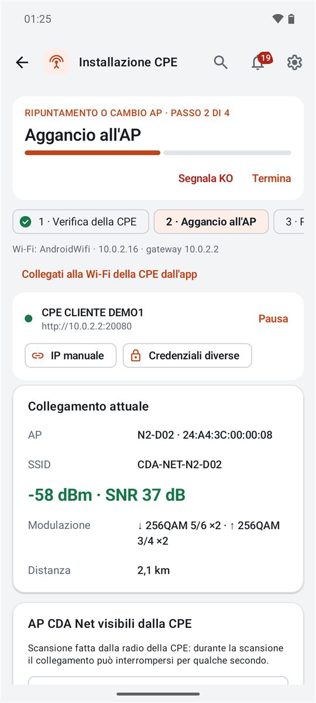
Passo 5 · Puntamento
Il numero grande è il segnale ricevuto dalla CPE, aggiornato di continuo, con il valore atteso e il picco raggiunto. Nel grafico la linea verde tratteggiata è la soglia «buono», quella rossa il minimo. L'installatore ruota piano l'antenna in orizzontale, poi in verticale, e si ferma sul picco. Per lavorare con il telefono in tasca ci sono:
- Bip: il tono sale quando il segnale migliora;
- Voce: l'app legge il segnale ad alta voce (meno 58);
- Vibra al picco: vibra ogni volta che il picco viene superato.
Sotto ci sono la direzione dell'AP (azimut, tilt, distanza) e i pulsanti per il Mirino in realtà aumentata, la Bussola verso l'AP, la Mappa e lista degli AP e il Puntamento a schermo intero. Lo schermo resta acceso durante il lavoro.


Realtà aumentata (dalla scorciatoia in Oggi, dal mirino o da Copertura): inquadrando il paesaggio dal punto della CPE compaiono gli AP intorno con nome, distanza e segnale atteso, la linea azzurra dell'orizzonte calcolata dal terreno e gli anelli di Fresnel verso l'AP scelto, che devono restare liberi. Se un albero o un tetto entra negli anelli vicini, la CPE va spostata o alzata; se l'AP è sotto la linea azzurra, la collina lo copre. All'aperto Allinea sulle montagne dà la massima precisione; da dentro casa, attraverso un vetro, bussola e orizzonte possono sbagliare di qualche grado.
Passo 6 · Router e velocità
Con l'antenna puntata, prima del collaudo l'installatore controlla che il cliente navighi alla velocità del suo abbonamento. Il passo ha quattro riquadri, da fare in ordine:
- Router del cliente: il router va collegato alla porta LAN della CPE e configurato; poi Router pronto, procedi.
- Wi-Fi del router del cliente: il telefono va collegato alla Wi-Fi del router (con Apri le impostazioni Wi-Fi). Se è ancora sulla Wi-Fi della CPE, c'è Scollega dalla Wi-Fi della CPE. Il test si fa solo sulla Wi-Fi, mai con i dati mobili: l'app mostra la rete, il segnale e se c'è Internet.
- Canale e ampiezza del router: l'app legge banda, canale e larghezza della rete del router e conta le reti dei vicini sullo stesso canale e sovrapposte. Se c'è da cambiare qualcosa lo indica (per esempio Sposta la rete 2,4 GHz sul canale 11, collegalo alla rete 5 GHz, sulla 2,4 GHz usa 20 MHz): l'installatore lo cambia sul router, scrive in Cosa hai cambiato cosa ha fatto e tocca Rileggi. Se va bene, Va bene, procedi.
- Speedtest: Avvia speedtest misura download, upload, ping e jitter verso il server CDA Net, in circa 20 secondi. In alto ci sono il profilo del cliente (es. 30 / 6 Mbit/s) e il minimo da raggiungere, di solito l'80% (24 / 4,8).
Se il risultato è nei parametri compare Velocità nei parametri del profilo e si va avanti con Avanti: verifica finale. Se è sotto il minimo, l'app elenca cosa controllare prima di riprovare: il puntamento, altri dispositivi che usano la linea (TV, download, aggiornamenti), il canale del router, il cavo e la porta LAN tra CPE e router. Ripeti il test si può usare tutte le volte che serve: ogni prova arriva al NOC. Se il minimo non si raggiunge, Prosegui con la velocità sotto il minimo: il collaudo uscirà con riserva per la velocità e deciderà il NOC.
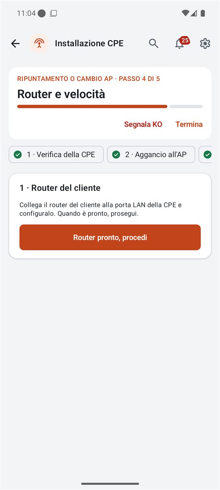
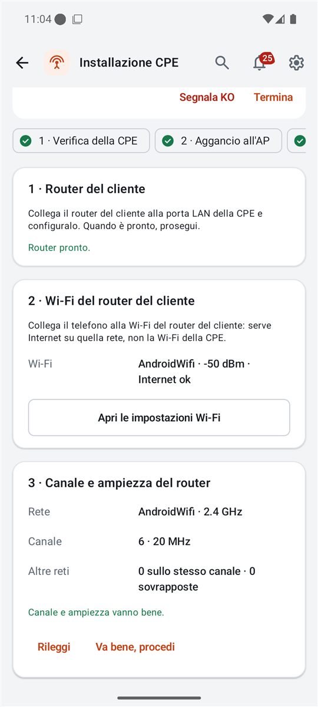
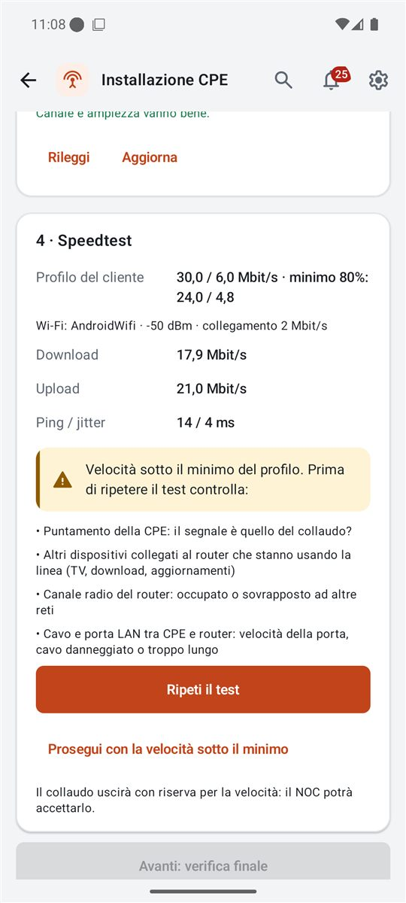
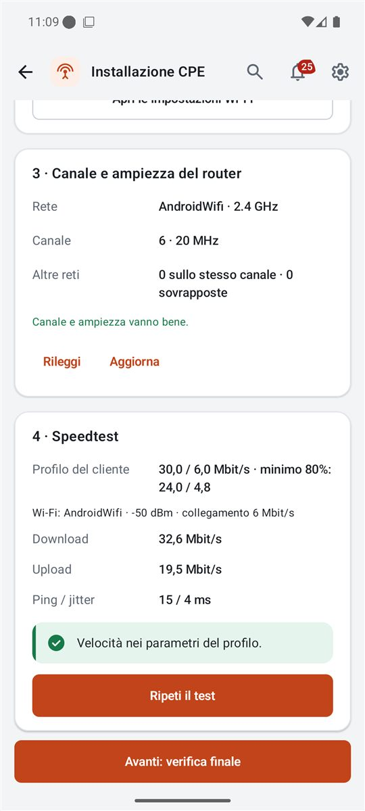
Passo 7 · Verifica finale e collaudo
In alto si vede subito se l'installazione è nei parametri; sotto ci sono le misure radio e i controlli con spunta verde, avviso arancione o errore rosso, ognuno con cosa fare. A fine installazione il collaudo si apre da solo:
- Altezza della CPE dal suolo (in metri, es. 7,5): è obbligatoria e va nel verbale.
- Misure radio: Avvia misura fa 10 letture in 10 secondi e ne fa la media.
- Internet dal lato cliente: lo speedtest fatto al passo Router e velocità è già nel collaudo; se serve lo si ripete qui, sempre dalla Wi-Fi del router del cliente.
- Foto (fino a 8): antenna, staffa o palo, cablaggio, router del cliente. Finiscono anche nel rapporto PDF del collaudo.
- Note per il NOC, se servono.
- Salva e invia collaudo. L'esito (superato, con riserva, non superato) è calcolato con le soglie del NOC. Senza rete il collaudo resta in coda e parte da solo dopo.

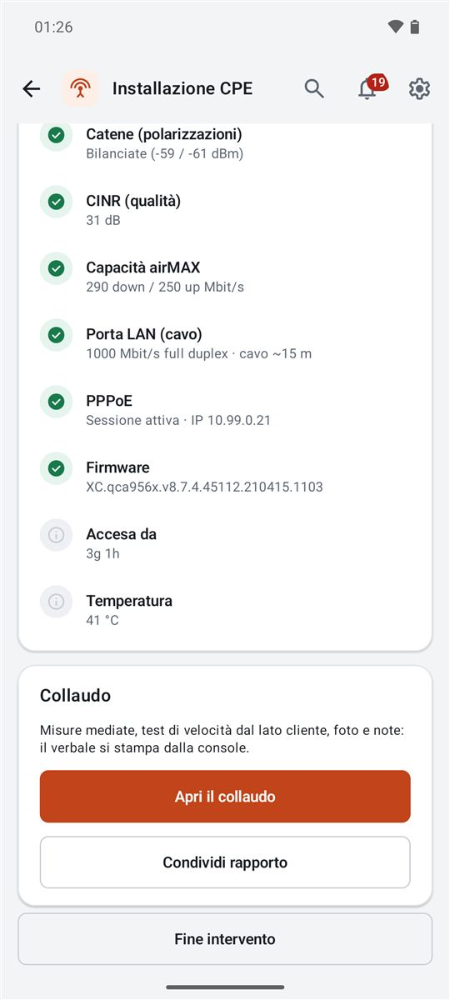

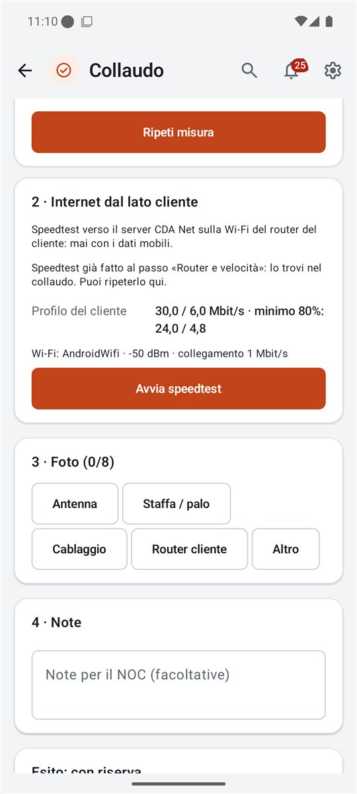
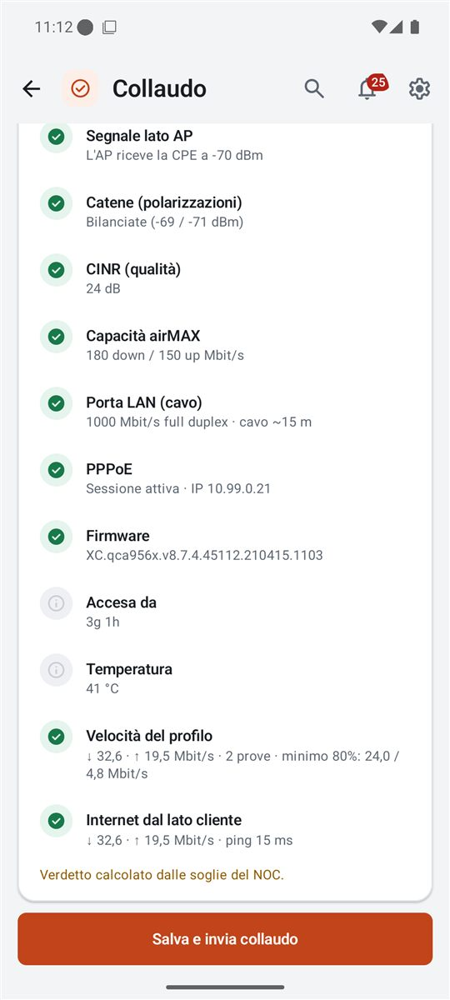

Nel collaudo finiscono anche lo speedtest (con il numero di prove fatte) e la Wi-Fi del router del cliente: nome della rete (SSID), banda, canale, larghezza, reti vicine e cosa è stato cambiato. Sono anche nel rapporto PDF.
Con Fine intervento il lavoro è chiuso. Quando il collaudo è superato, il NOC sa che la CPE è pronta e la accetta in rete. Il rapporto PDF si apre dallo Storico o dalla schermata Collaudo con Visualizza rapporto e Scarica PDF.
Segnale pessimo: se il segnale è sotto il minimo o un controllo radio è rosso, il collaudo si salva come sempre ma resta in attesa dell'approvazione del NOC. La decisione, con la nota, arriva nelle Notifiche; se è un rifiuto, l'installatore ripunta o cambia AP e rifà il collaudo. Il NOC può anche segnare come superato un collaudo con riserva o non superato, con il motivo: l'app lo mostra come Superato per decisione del NOC.

Se non si riesce: Segnala KO
In ogni passo, in alto, c'è Segnala KO:
- Rimandata: si riprova un altro giorno (maltempo, cliente assente, materiale mancante…), con il motivo e, se concordato, quando;
- KO definitivo: l'installazione non si può fare (nessun AP visibile, ostacoli…), sempre con il motivo.
Fase, SSID, segnale e MAC li allega l'app. Il NOC viene avvisato subito, e non si blocca nulla: c'è Riprovare ora, oppure si chiude e si torna un altro giorno. Quando un tentativo successivo supera il collaudo, la segnalazione si chiude da sola.
Un'installazione fallita, o preparata e mai scritta, si riapre da Installa → Da completare con Modifica e riprova: tutti i dati sono ancora lì e si corregge quello che serve (per esempio il MAC).

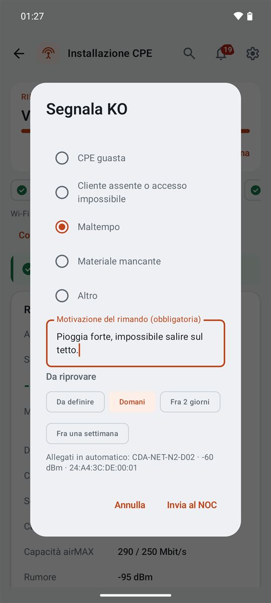
5. Ripuntamento, cambio AP, sostituzione
Ripuntamento o cambio AP salta configurazione e scrittura: l'installatore si collega alla Wi-Fi della CPE (anche con Collegati alla Wi-Fi della CPE) o a quella del router del cliente, l'app trova la CPE e si riparte dalla verifica; dopo il puntamento c'è anche qui Router e velocità. Se la CPE era stata installata con l'app, collaudo e foto si aggiungono a quell'installazione.
Ci si arriva anche da Installa → Stato CPE, con Ripuntamento su una CPE il cui segnale è calato.
Sostituzione CPE (antenna guasta): dallo Storico si apre l'installazione e si tocca Sostituisci CPE. Parte una nuova installazione con i dati del cliente già compilati: si inserisce la CPE nuova e si prosegue dal passo 1, speedtest compreso.
6. Dopo l'installazione
Tutto è in Installa, con tre schede: Da completare (collaudo mancante, rifiutato dal NOC, scrittura fallita o mai fatta, con il pulsante per riprenderle), Storico e Stato CPE.
Storico: tutti i provisioning dell'installatore con esito, collaudo, rimandi o KO e decisione del NOC; da qui si aprono lo storico del segnale (7 giorni), il collaudo con le foto e il rapporto PDF, e Sostituisci CPE.
Stato CPE: le CPE installate confrontate con il collaudo (offline, segnale debole, segnale calato di almeno 6 dB, porta LAN lenta), con ricerca e filtri. Toccando una CPE si vedono dettagli, storico e ripuntamento.


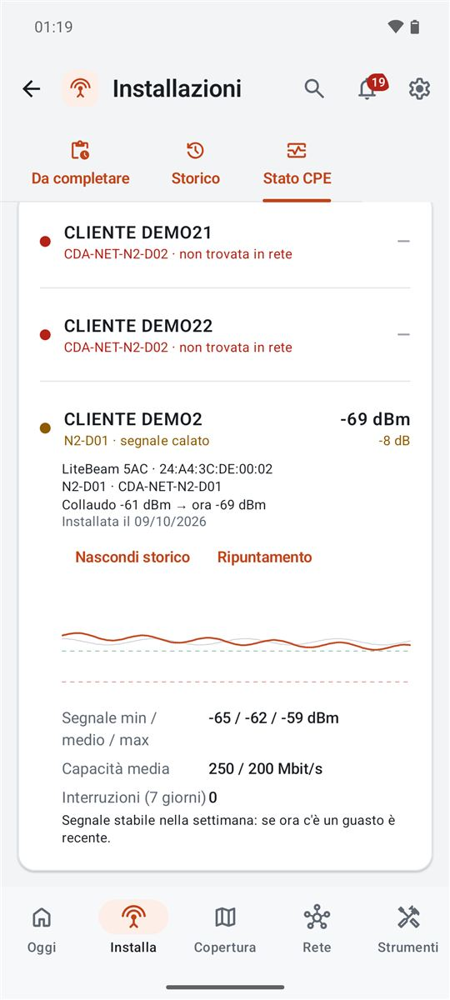
Notifiche
La campanella in alto mostra gli esiti delle installazioni (approvazione o rifiuto del NOC con la nota, attivazione in rete) e gli avvisi sugli interventi. Toccando una notifica la si segna come letta; il cestino la elimina, e in alto ci sono Elimina le lette ed Elimina tutte. Le notifiche si cancellano da sole dopo 14 giorni. Per riceverle anche su Telegram si collega Telegram in Impostazioni.

7. Le CPE del magazzino
Se l'amministratore ha collegato l'account a un magazzino, l'app conosce le CPE in carico all'installatore, con modello e MAC. Si scelgono al passo 1 (o sul tetto, in CPE di questo intervento) e l'elenco resta sul telefono, quindi funziona anche senza rete. Si aggiorna ogni volta che Oggi si apre con Internet.
- Se l'opzione «può installare CPE non presenti nel suo magazzino» non è attiva sull'account, nelle nuove installazioni i campi MAC e seriale non ci sono proprio: la CPE si sceglie solo dal magazzino. Se il magazzino è vuoto, l'app lo segnala: l'installatore chiede all'ufficio di caricarne una.
- Se l'opzione è attiva, si può anche scansionare una CPE fuori magazzino: l'app avvisa e l'installazione resta annotata.
Dalla console, in Il mio magazzino, c'è lo stesso elenco dal computer.

8. Strumenti di campo
CPE collegata
Tutto quello che si fa con la CPE in mano, collegandosi una volta sola alla sua Wi-Fi (o a quella del router del cliente). Si apre da Strumenti o dalle scorciatoie. Ci sono cinque schede:
- Diagnosi: per i guasti, indica in rosso cosa non va (non agganciata, PPPoE non attivo, cavo LAN, firmware, riavvii frequenti). Con Condividi rapporto il riepilogo va al NOC.
- Puntamento: lo stesso del passo 5.
- AP visibili: la scansione fatta dalla radio della CPE, con l'aggancio a un altro AP.
- Collaudo: misure, speedtest, foto e note.
- Firmware: porta la CPE alla versione richiesta (si veda sotto).
Se il telefono non è su nessuna Wi-Fi, ogni scheda propone Collegati alla Wi-Fi della CPE.


Verifica copertura
In Copertura, nella barra in basso. Serve a capire prima del sopralluogo se un indirizzo è coperto: si scrive l'indirizzo (o le coordinate, es. 37.59, 14.11) e si tocca Cerca, oppure si usa Qui (GPS) o si tocca un punto sulla mappa. Gli AP compaiono in ordine di segnale stimato, con distanza, direzione e segnale atteso; da ognuno si aprono Mappa (che riporta sulla mappa con il riquadro dell'AP), Collegamento, Bussola o Realtà aumentata.
Nel Collegamento ci sono puntamento, inclinazione, zona di Fresnel, capacità stimata, il profilo del terreno e il segnale atteso sulla scala delle modulazioni; scegliendo la CPE da installare e l'altezza, tutto si ricalcola. La stima tiene conto delle colline tra l'indirizzo e l'AP e dell'altezza della CPE; edifici e alberi entrano dove sono stati scaricati, ma vanno sempre verificati a vista. Ogni AP dice anche se la sera è libero, medio o carico: uno carico non viene mai consigliato come buono.
L'installatore vede solo gli AP della sua zona, con una posizione approssimativa: se un indirizzo è servito da un AP di un'altra zona, va chiesto all'ufficio.


AP vicini
In Rete → AP vicini, sul posto: si parte dal GPS del telefono. Gli AP compaiono sulla mappa e in lista, con distanza, altitudine, azimut, tilt e segnale stimato, prima i buoni. Impostando l'altezza della CPE il tilt è preciso; in alternativa, con Sono sul tetto l'app la ricava dal GPS (se è abbastanza preciso). Da ogni AP si aprono Mirino, Bussola o Visibilità.
Senza rete: ogni ricerca riuscita resta sul telefono per 14 giorni, e quelle intorno agli interventi del giorno vengono scaricate in anticipo. Se sul tetto non c'è segnale l'app usa i dati salvati entro 400 m e lo segnala; la mappa invece vuole Internet, quindi restano lista, bussola e mirino.
Visibilità verso l'AP
Prima di salire, Visibilità disegna il profilo del terreno tra l'installatore e l'AP, la linea di vista e la zona che deve restare libera. Dice se la vista è libera, se il terreno entra nella zona di Fresnel o se è ostruita, e di quanto alzare il palo; se non basta nessun palo realistico, suggerisce un altro AP. Sono stime: vanno sempre controllate a vista.
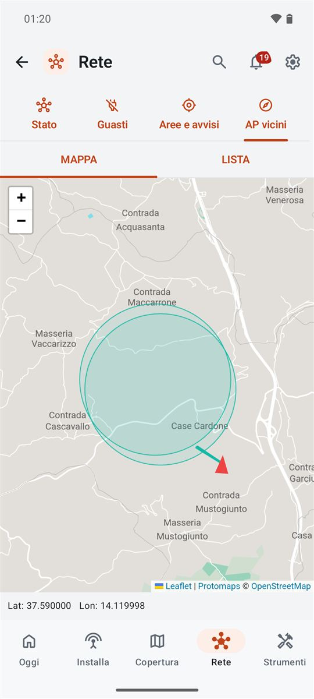


Firmware della CPE
La configurazione va scritta su CPE con il firmware richiesto. Di solito non serve fare niente: con Installa sulla CPE l'app aggiorna da sola la CPE, usando il firmware già scaricato sul telefono quando era online. Per farlo a mano:
- con Internet, in CPE collegata → Firmware, si scarica il firmware della piattaforma usata;
- sulla Wi-Fi della CPE si tocca Leggi la versione della CPE;
- si tocca Aggiorna e si conferma: la CPE si aggiorna e si riavvia da sola (3-5 minuti).
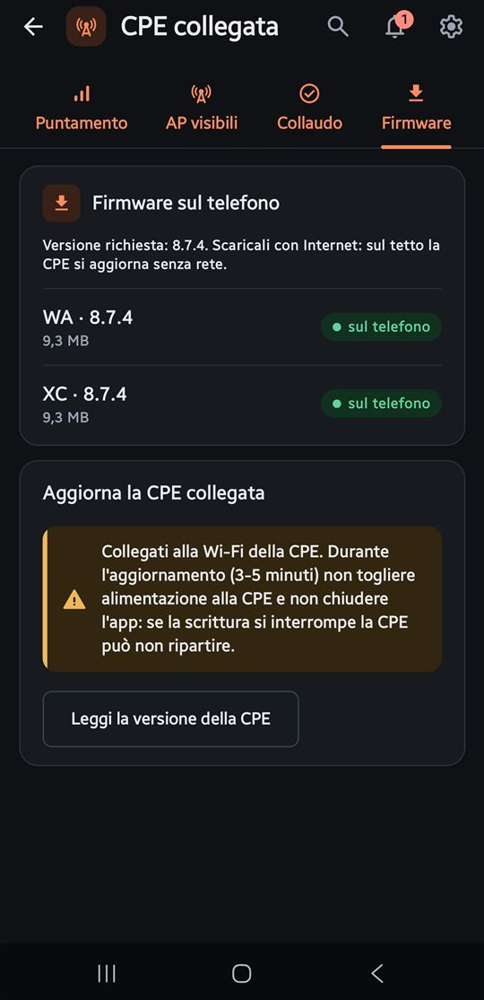
9. Stato rete e guasti Enel
In Rete ci sono quattro schede: Stato, Guasti, Aree e avvisi e AP vicini.
Stato: i POP e gli AP della zona dell'installatore, aggiornati ogni minuto: raggiungibili o no, AP con molte CPE offline e il simbolo ⚡ quando c'è un guasto Enel vicino. All'apertura compaiono solo quelli con problemi; con Tutti compaiono tutti.
Per i POP alimentati a batteria c'è anche la riga Batteria: la carica, se è in scarica o in carica e lo stato (bassa, allarme, nessun dato). Off-grid vuol dire che il POP va solo a fotovoltaico: un guasto Enel lì non lo spegne, colpisce solo i clienti intorno.
Guasti: le interruzioni della rete elettrica nelle zone dell'installatore, su mappa e in lista (media tensione in rosso, bassa in arancio, lavori programmati in grigio). Toccando una riga si vedono ripristino previsto, POP/AP interessati (con la batteria dei POP che ce l'hanno; «off-grid: solo i clienti» se il POP non dipende dalla rete), Sulla mappa e Navigatore.
Aree e avvisi
Le aree di interesse sono i posti da seguire anche fuori dalla propria zona: casa, una frazione, il paese di un cliente. Un'area si aggiunge dal GPS o da un indirizzo con il raggio, scegliendo gli avvisi: Guasti MT, Guasti BT, Lavori. Con l'interruttore la si mette in pausa. Le stesse regole valgono per Telegram.


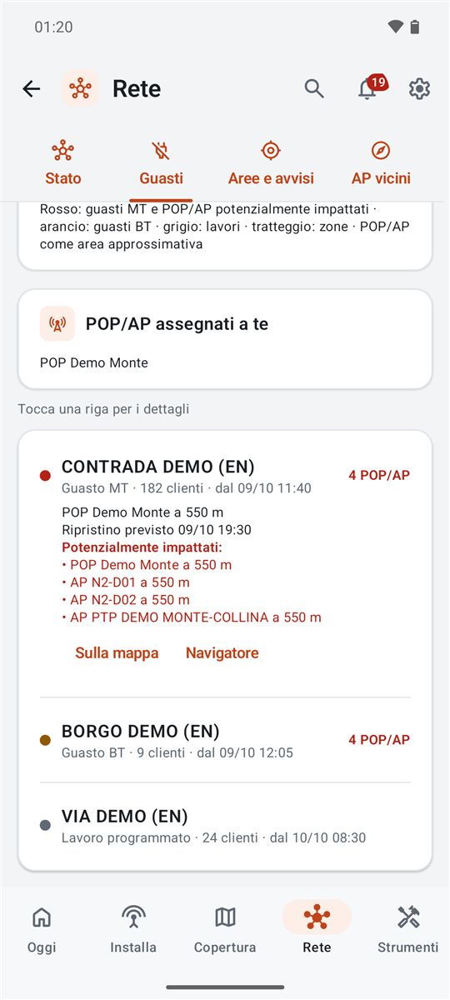

10. Strumenti di rete
In Strumenti, divisi per gruppi. Funzionano anche senza accesso al server (Continua senza accesso), sulla rete a cui è collegato il telefono; lo Speedtest invece richiede l'accesso:
| Strumento | A cosa serve |
|---|---|
| Speedtest | Download, upload, ping e jitter verso il server CDA Net, sulla Wi-Fi a cui è collegato il telefono (si veda sotto) |
| Scansione LAN | Host attivi, topologia, discovery e porte |
| Wi-Fi Analyzer | Reti, canali e segnale; Router del cliente indica che canale e larghezza impostare |
| Diagnostica di rete | Ping, traceroute, DNS, MTU, prova HTTP, Wake-on-LAN e lo Speedtest (server CDA Net) |
| Apparati in LAN | SNMP e telecamere: ONVIF, Hikvision, anteprima RTSP, calcolo della banda |
| MikroTik · RouterOS | Consultazione in sola lettura via SSH |
| Accesso remoto | SSH e Remote Desktop con app esterne |
Speedtest
Lo stesso test del passo 6, da usare quando serve fuori da un'installazione (per esempio in un intervento per lentezza): il telefono va sulla Wi-Fi del router del cliente e si tocca Avvia speedtest. Funziona solo sulla Wi-Fi, mai con i dati mobili, e con le stesse soglie di segnale. Ogni prova arriva al NOC.
Scansione LAN
Con il telefono sulla Wi-Fi del cliente si apre Strumenti → Scansione LAN e si tocca Avvia scansione: il radar si riempie man mano che gli host rispondono. La scansione ha due fasi: prima trova gli host, poi costruisce la topologia; finché non compare COMPLETATA produttori e collegamenti si stanno ancora aggiornando. Le viste sono tre: Elenco (toccando un host: MAC, produttore, porte, Web, copia IP e MAC), Griglia IP (utile anche per trovare un indirizzo libero) e Topologia.

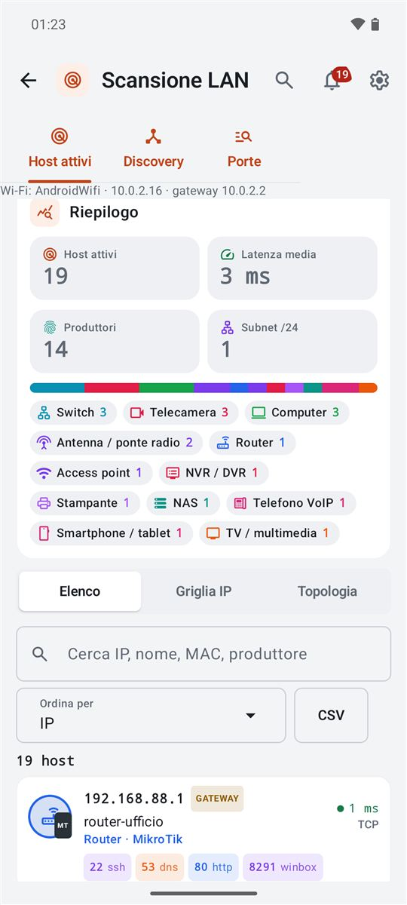


Topologia della rete
Si costruisce da sola a fine scansione: Internet in alto, poi gateway, switch e access point, e sotto i dispositivi. Linea piena: collegamento certo; tratteggio blu: wireless; linea sottile: dedotto dallo switch; puntini: presunto. Si pizzica per lo zoom; a schermo intero toccando un dispositivo se ne vedono i dettagli. PNG e PDF salvano la mappa in Download/CDA Net.

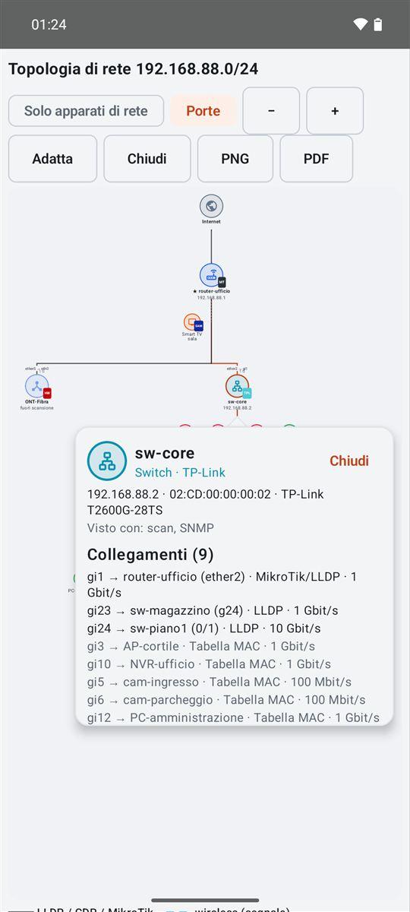
Discovery multi-vendor
Nella scheda Discovery, Avvia discovery interroga in pochi secondi i protocolli dei produttori (MikroTik, Ubiquiti, Hikvision, Dahua, ONVIF, WS-Discovery, UPnP, mDNS, Netgear). Ogni dispositivo risponde anche se ha l'IP di un'altra subnet: utile per trovare una telecamera o un'antenna con un indirizzo sbagliato. Se la Wi-Fi del cliente isola i client (rete ospiti) non risponde nessuno.
Porte
Nella scheda Porte si scelgono indirizzo e profilo (rapida, apparati di rete, TVCC/NVR, Windows/server…) o un elenco libero come 1-1024,8291. Compaiono le porte aperte, chiuse e filtrate, con banner, header HTTP e certificato TLS delle aperte.
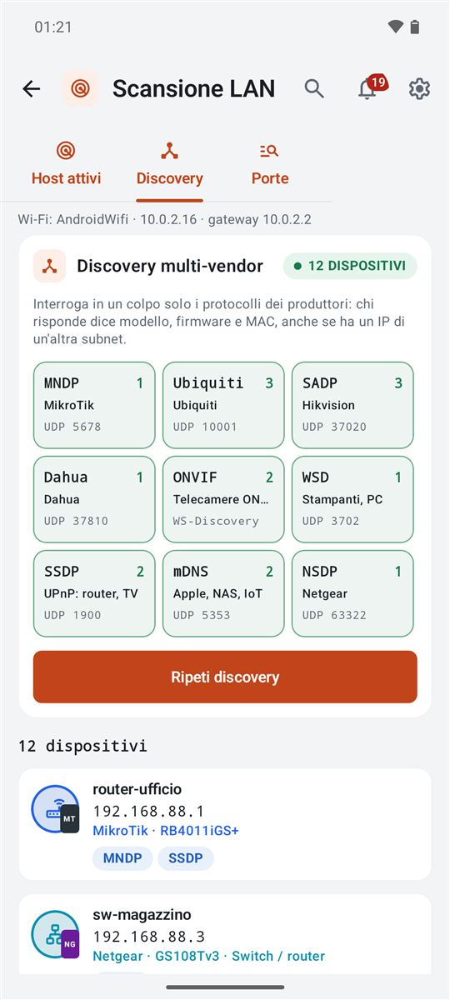
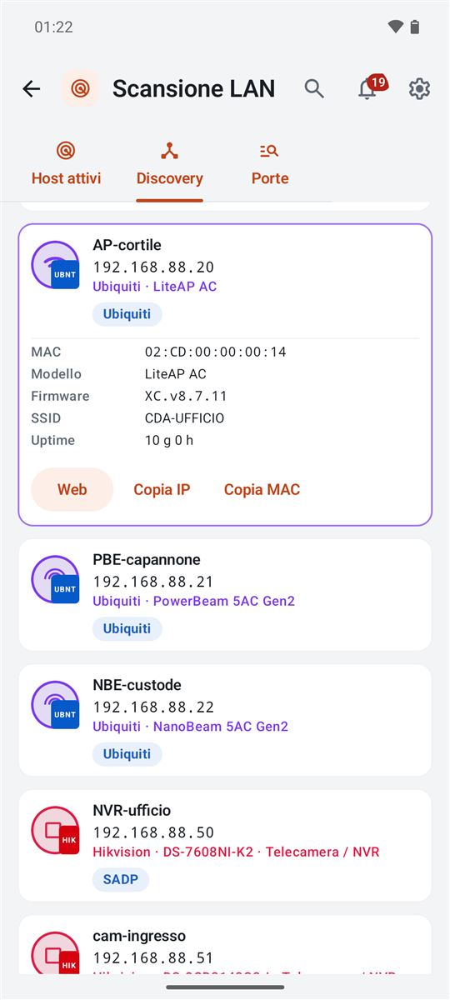
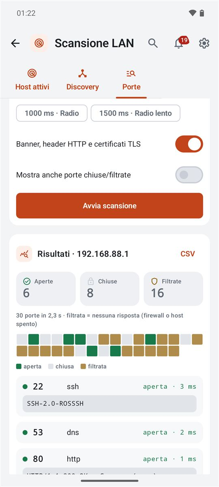


11. Impostazioni
Dall'ingranaggio: l'account, Esci (la volta dopo serve la password), Cambia password (almeno 12 caratteri), Accesso su questo telefono con Sblocco con impronta o volto, Notifiche su Telegram, Esci da tutti i dispositivi (in caso di telefono perso) e l'indirizzo del server.

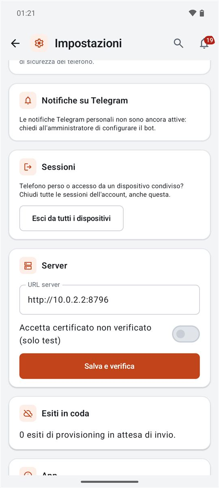
12. La console web
Dal computer si apre l'indirizzo del server e si accede con lo stesso utente dell'app. Le CPE si configurano solo dall'app; la console serve per consultare, esportare e stampare.
| Voce | Cosa contiene |
|---|---|
| I miei interventi | Gli interventi dell'ufficio, in elenco o in Calendario (giorno, settimana, mese) |
| Storico provisioning | I provisioning dell'installatore con ricerca, filtri ed esportazione CSV; il collaudo con le foto e gli speedtest |
| Le mie CPE | Lo stato delle CPE installate rispetto al collaudo |
| Il mio magazzino | Le CPE in carico, con modello e MAC |
| Guasti Enel e Stato rete | I guasti nelle zone dell'installatore e lo stato dei suoi POP e AP |
| Copertura | Gli AP consigliati per un indirizzo, con mappa e collegamento |
| Notifiche | Le stesse dell'app, con elimina e la scelta di cosa ricevere su Telegram |
| Il mio account | Password, verifica in due passaggi, sessioni, telefoni collegati |


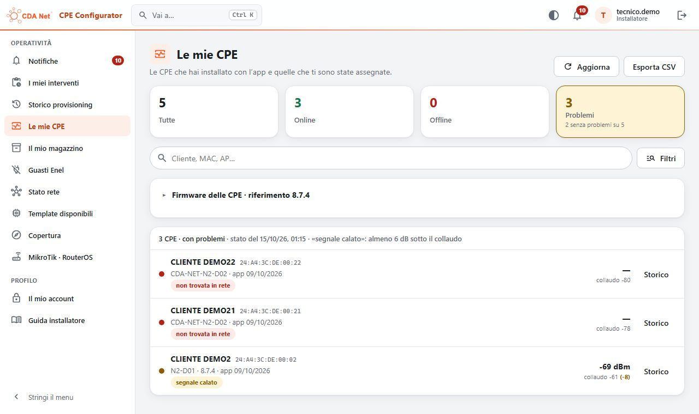
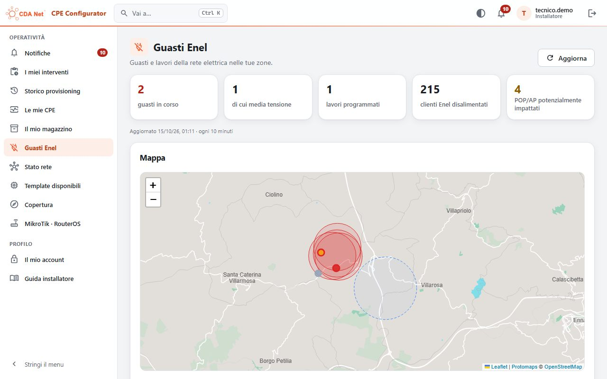
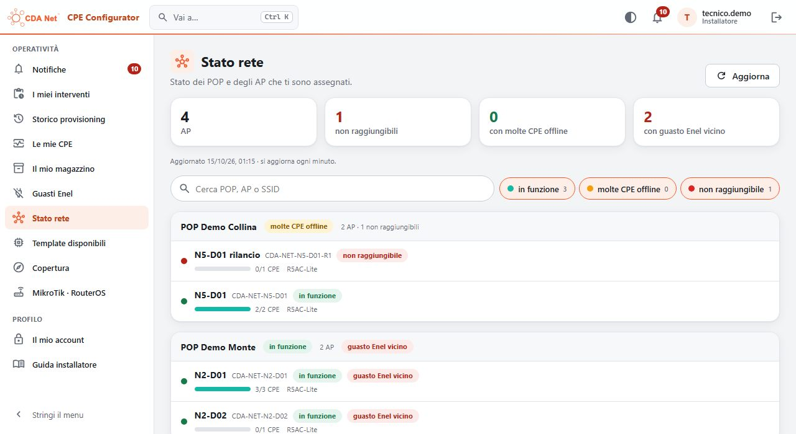
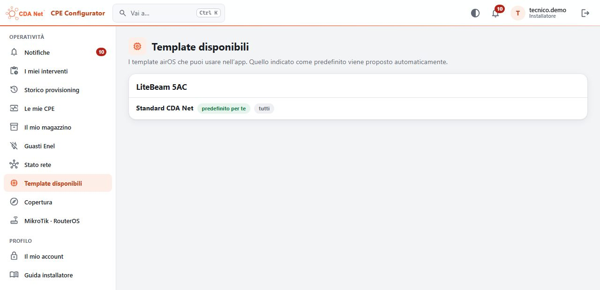


13. Problemi frequenti
| Problema | Cosa fare |
|---|---|
| «Aggiornamento obbligatorio» | Lasciar scaricare l'aggiornamento e installarlo: senza, l'app non fa accedere. |
| Server non raggiungibile | Controllare dati mobili o Wi-Fi. Sulla Wi-Fi della CPE il server si raggiunge dalla rete mobile: se la rete mobile è spenta o non c'è, si lavora offline. |
| «Nessun template airOS per …» | Quel modello non è ancora pronto: avvisare l'amministratore. |
| Configurazione scaduta | Sono passate più di 48 ore: tornare online e rifare Prepara provisioning (gli interventi «pronto offline» si ripreparano da soli). |
| «Questa CPE non risulta nel tuo magazzino» | Scegliere una CPE dal magazzino. Se è davvero in carico all'installatore, chiedere all'ufficio di caricarla o di permettere CPE fuori magazzino. |
| «Nessuna CPE nel tuo magazzino» | Il magazzino è vuoto: chiedere all'ufficio di caricarne una. |
| Collegati alla Wi-Fi della CPE: non compare la CPE | Avvicinarsi e controllare che sia alimentata; se ha già la configurazione CDA Net la sua Wi-Fi di gestione può essere spenta: usare la Wi-Fi del router del cliente. |
| «Nessuna CPE airOS trovata» | Controllare che il telefono sia sulla Wi-Fi della CPE o del router del cliente; provare IP manuale. |
| La CPE rifiuta le credenziali | La CPE è stata configurata a mano: usare Credenziali diverse. |
| Segnale sotto −75 dBm | Rivedere il puntamento, cercare ostacoli, provare un altro AP o alzare l'antenna. |
| Catene sbilanciate (oltre 6 dB) | Ostacolo, riflessione o tilt sbagliato: correggere il puntamento verticale. |
| Porta LAN a 100 Mbit/s o half duplex | Cavo o connettore danneggiato: rifare i plug o cambiare cavo. |
| PPPoE non attivo | Controllare utente e password o lo stato dell'abbonamento con l'ufficio. |
| Speedtest: «Avvicinati al router» | Il telefono riceve la Wi-Fi del router sotto −70 dBm: avvicinarsi al router e riprovare. |
| Speedtest: «Il telefono non è sulla Wi-Fi del router» | Il telefono è sui dati mobili o sulla Wi-Fi della CPE: collegarlo alla Wi-Fi del router del cliente. |
| «Speedtest non riuscito» | La Wi-Fi del router non ha Internet: controllare il cavo tra CPE e router e che il PPPoE sia attivo. |
| Velocità sotto il minimo del profilo | Controllare puntamento, altri dispositivi collegati, canale del router e cavo LAN, poi Ripeti il test. Se resta sotto, proseguire: il collaudo va con riserva. |
| Collaudo in attesa di invio | Niente da fare: parte da solo appena c'è rete. |
| «C'è un problema tra i dati dell'intervento e la tua posizione» | L'installatore è a più di 500 m dal cliente: controllare l'indirizzo, spostarsi all'aperto se il GPS è impreciso o chiedere all'ufficio di correggerlo. |
| Lo screenshot esce nero | Sull'account gli screenshot sono disattivati: se servono per lavoro, chiederli all'amministratore. |
| «Sessione scaduta» | L'app non è stata usata per 30 giorni o la password è cambiata: accedere di nuovo. |
14. Glossario
| CPE | L'antenna sul tetto del cliente. |
| AP | L'antenna del POP a cui si collegano le CPE di una zona. |
| POP | Il sito (traliccio) con uno o più AP. |
| Nodo, distretto, rilancio | Compongono l'SSID dell'AP: CDA-NET-N<nodo>-D<distretto>, con -R<n> per un rilancio. |
| dBm | Potenza del segnale: più vicino a zero è meglio (−58 è meglio di −70). |
| SNR / CINR | Quanto il segnale supera rumore e interferenze, in dB: più alto è meglio. |
| Catene | Le due polarizzazioni dell'antenna: devono ricevere valori simili. |
| Azimut / tilt | Direzione orizzontale (0° = nord) e inclinazione verticale verso l'AP. |
| PPPoE | L'accesso a Internet del cliente, con utente e password. |
| Profilo | La velocità dell'abbonamento del cliente (es. 30 / 6 Mbit/s): lo speedtest deve arrivare almeno al minimo (di solito l'80%). |
| Speedtest | La misura di download, upload, ping e jitter dalla Wi-Fi del router del cliente verso il server CDA Net. |
| Collaudo | Misure finali, speedtest, foto e note che certificano l'installazione. |
| Pronto offline | Intervento la cui configurazione è già sul telefono: si scrive anche senza rete. |